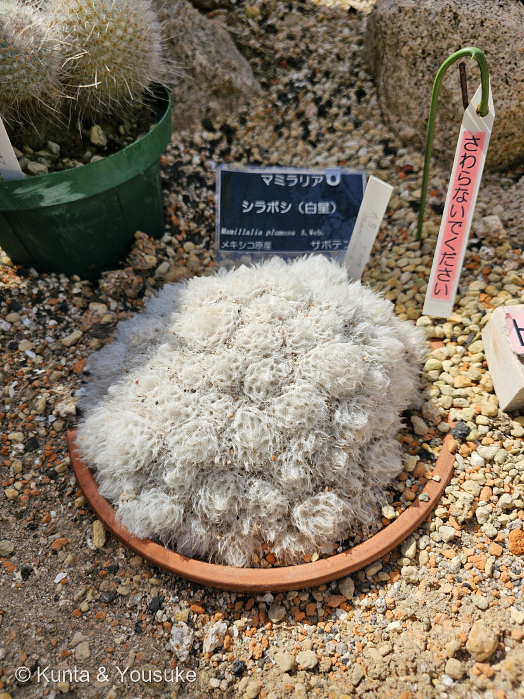

地図を読み込んでいるよ…
🔍 写真も地図も、押しているあいだ拡大して見られるよ（スマホは指を置いてすこし待ってね）。
🌍 の地図＝この子がもともと自生している場所を緑に。メキシコ北東部（コアウイラ州・ヌエボレオン州）。標高730〜1,350mの石灰岩の崖に生える。くわしくは下の地図の説明を見てね。
⭐メキシコだけの子だよ。⚠⚠でも、この緑は「メキシコ全体」ではまったくない――LLIFLE は自生地を「Coahuila and Nuevo León, Mexico」＝コアウイラ州とヌエボレオン州（メキシコ北東部）とし、標高730〜1,350mの石灰岩の崖に、まばらな乾燥低木林とともに生えるとする。⭐地図は国までしか塗れないので、実際にいるのはこの緑のごく一部の、崖の面だけ。⚠⚠そしてIUCNレッドリストで準絶滅危惧（near threatened）――⭐減っている理由は、売るための違法採集と、地元の人がクリスマスの馬小屋の飾りにするために採ること（英語版Wikipedia）。⭐ぼくらが会ったのは広島市植物公園の温室だから、この緑の外だね。⭐⭐同じ日・同じ温室で会った243 ハクジンマルは中部、244 ハクダマルは南部＝三人でメキシコを縦にたどれるよ。
⚠ 地図は国（日本と中国だけ県・省）までしか塗れないから、ほんとうの分布より広く見えていることがあるよ。地図はだいたいの場所。正確なところは、上の文を見てね。
シラボシ（白星）
Mammillaria plumosa A.Weber
別名 フェザーカクタス（Feather Cactus・羽毛のサボテン） 原産 メキシコ北東部（コアウイラ州・ヌエボレオン州）の石灰岩の崖・標高730〜1,350m
サボテン科 · Cactaceae（マミラリア属 Mammillaria・ナデシコ目 Caryophyllales）── ⭐図鑑で3人目のサボテン科（016 王冠竜・218 キンシャチにつづく）／⭐⭐⭐マミラリア属ははじめて＝⚠これまでの2人とは、体のつくりが根本からちがう／⚠科は増えないので97科のまま
燻太さんの一言「シラボシはもはやサボテンかどうかすらわからないほど、白い毛のようなものに覆われているよ。日よけと水分保持のためなのかな？」── ⭐⭐⭐⭐両方あたっていたよ。そして「毛のようなもの」の正体が、いちばんおどろきだった
⭐ 名前と学名の由来 ──「羽毛の」サボテン
- ⭐⭐属名 Mammillaria は、ラテン語の mammilla（乳頭・疣＝いぼ）から。⭐この属を「疣サボテン」と呼ぶのは、そのままの意味なんだ。
- ⭐⭐⭐種小名 plumosa は「羽毛のある」＝英名も Feather Cactus（羽毛のサボテン）。⭐写真①を見れば、なぜそう呼ばれるかは説明がいらないね。
- ⭐和名は「白星（しらぼし）」。⭐白い球が寄りあつまっている姿が、そのまま名前になっている。
この植物のこと ── メキシコ北東部の、石灰岩の崖
- ⭐自生地はコアウイラ州とヌエボレオン州（メキシコの北東部）。標高730〜1,350mの石灰岩の崖に、まばらな乾燥低木林とともに生える。
- ⭐⭐野生では、こんなふうに育つ＝「clumping plants that forms low, dense mounds sometime up to 40 cm wide entirely covered by the mass of white feathery spines」（LLIFLE）＝白い羽毛でおおわれた低い塚が、幅40cmにもなる。
- ⭐花は「Whitish yellow ... with a strong sweet scent」＝白っぽい黄色で、強い甘い香り。
- ⚠⚠そして、この子には重たい話がある。――IUCNレッドリストで準絶滅危惧（near threatened）。⚠理由は売るための違法採集と、⭐⭐地元の人がクリスマスに採ること＝「the local community also collects plants from the wild and sells them at local markets at Christmas time, as they are used to decorate nativity scenes」（英語版Wikipedia）。
- ⭐⭐⭐白い羽毛が、雪に見えるからだね。――⚠きれいだから採られる、というのは、225 ヒゴタイや218 キンシャチで見たのと同じ形の話だよ。
⭐⭐⭐⭐⭐ 燻太さんの問い ──「日よけと水分保持のためなのかな？」
⭐⭐⭐⭐ 両方あたっていたよ。しかも、出典がそのとおりに書いていた。
- ⭐日よけ＝「Epidermis cells on spines of Mammillaria plumosa grow out as trichomes, shading the plant」／「that furnish an epidermal protection against the blasting sun of the desert」（LLIFLE）＝砂漠の焼けつく日ざしから、下の緑の肌を守る。
- ⭐保水＝厚い白い層が、湿った空気のうすい膜を体のまわりに閉じこめる――それで、乾いて焼けるような谷風の中でも生きられる。
- ⭐⭐⭐⭐そして、いちばんおどろいたのがここ。――あの「羽毛」は、毛ではなくてトゲなんだ。⭐「The spines in this specie have very long hairs along the spine-axis arranged as are the segments of a bird’s feather」（LLIFLE）＝⭐⭐トゲの表皮の細胞が、毛（トリコーム）になって伸びたもの。
⭐⭐⭐ つまり ── トゲが、毛を生やしている。⚠「もはやサボテンかどうかすらわからない」と燻太さんが言ったけれど、⭐あの白いふわふわは、まぎれもなくサボテンのトゲそのものなんだよ。
⭐⭐⭐⭐ マミラリア属という、はじめての体のつくり
⚠ 図鑑にはもうサボテンが2人いる（016 王冠竜・218 キンシャチ）。⭐でも、この子は体の作りが根本からちがうんだ。
- 体の表面＝016・218は稜（りょう）＝たてに走るうね／⭐この子は疣（いぼ）＝らせんにならぶ小さなふくらみ
- 刺の出るところ＝016・218は稜の上の刺座／この子は疣の先の刺座
- ⭐⭐⭐花の出るところ＝016・218は刺座から／⭐⭐この子は疣と疣のあいだ（腋）から
⭐⭐⭐ この「花の出るところ」が、マミラリア属を決めている＝「ほとんどのサボテンは刺座から花が咲くのに対し、この属の花はイボとイボの間から咲きます」（東海園芸）。
⭐ マミラリア属はサボテン科でも最大級の属で、メキシコを中心に約200〜300種（400種を超えるともいわれる）。⚠この図鑑では、まだ入口に立ったところだよ。⭐この日、同じ温室で会ったのが243 ハクジンマルと244 ハクダマル。⭐⭐三人あわせて、メキシコを北東から南へ、縦にたどれるんだ。
参考＝LLIFLE・Mammillaria plumosa（「The spines in this specie have very long hairs along the spine-axis arranged as are the segments of a bird’s feather and that furnish an epidermal protection against the blasting sun of the desert」「clumping plants that forms low, dense mounds sometime up to 40 cm wide entirely covered by the mass of white feathery spines」「Whitish yellow, up to 3-15 mm long (occasionally with pink midstrips), with a strong sweet scent」／自生地＝Coahuila and Nuevo León, Mexico・730〜1,350m・石灰岩の崖）／英語版Wikipedia・Mammillaria plumosa（「Epidermis cells on spines of Mammillaria plumosa grow out as trichomes, shading the plant」／IUCN「near threatened」／「the local community also collects plants from the wild and sells them at local markets at Christmas time, as they are used to decorate nativity scenes」）／OPTE 東海園芸・マミラリア（「ほとんどのサボテンは刺座から花が咲くのに対し、この属の花はイボとイボの間から咲きます」「マミラリアは『コブ、疣（イボ）がある』というラテン語からきていて、疣サボテンとも呼ばれています」）／広島市植物公園の園名札